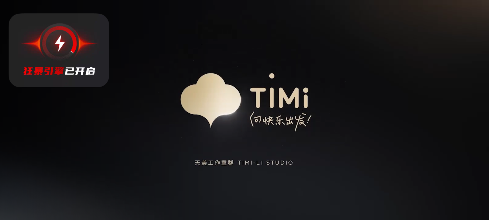

任务结果失败：未能确认目标界面
失败原因
应用启动后仍在游戏加载画面，目标主菜单尚未出现，模型无法确认声音图标，因而未执行点击。
应用启动后仍在游戏加载画面，目标主菜单尚未出现，模型无法确认声音图标，因而未执行点击。
处理方向：先等待主菜单画面确认，再进行声音图标定位。执行端现已加入最长 4 分钟的视觉等待、重规划次数限制和实时进度日志；修正后的端到端运行尚待复测。

任务结束截图：仍处于启动动画，说明此前未等到主菜单。
任务：主菜单声音设置视觉验收
状态：失败
失败步骤：1
日志摘要：应用已启动，但加载画面未切换到主菜单；视觉模型未识别到声音图标，任务停止。当前主菜单等待与实时日志修正尚待复测。